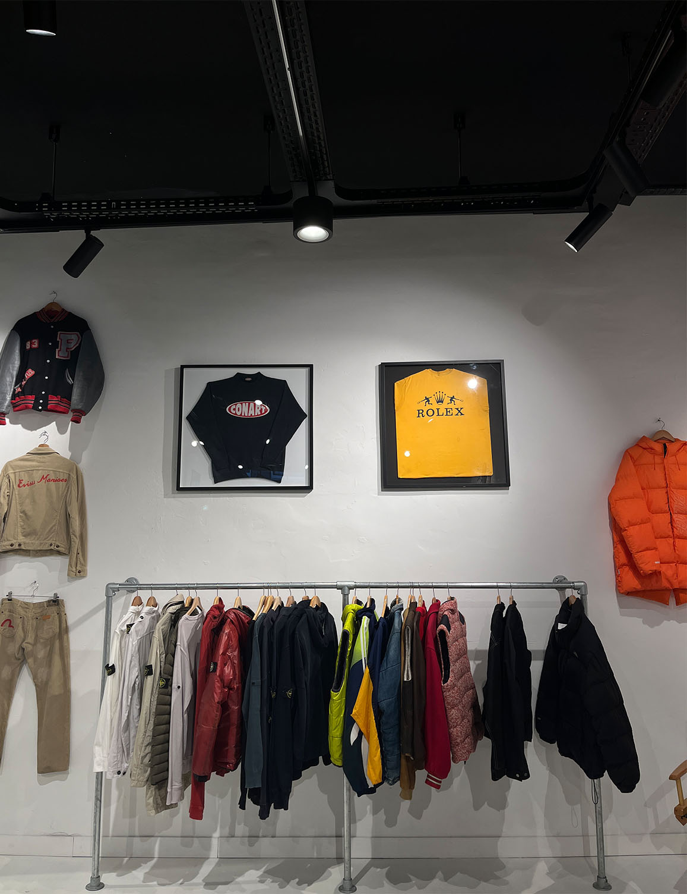

to your unique and sustainable fashion journey

EMBRACE THE BENEFITS OF VINTAGE FASHION
Vintage clothes are not just clothes—they’re stories,statements, and sometimes even archived designer pieces. When you buy and wear pre-loved items, you’re not only adding unique styles to your wardrobe but also reducing the demand for fast fashion. Choosing vintage helps minimize waste, conserve resources, and make a positive impact on the environment. Stand out with one-of-a-kind looks and support sustainable fashion.
